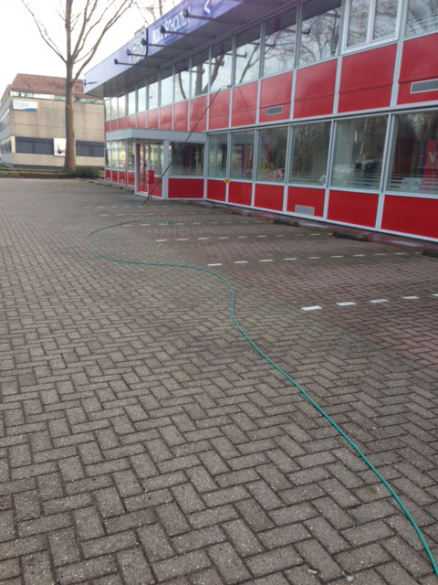
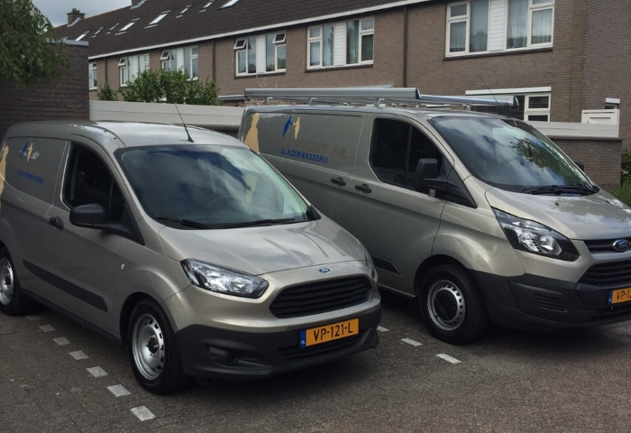
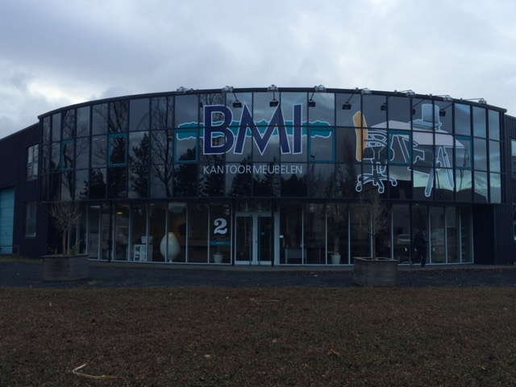
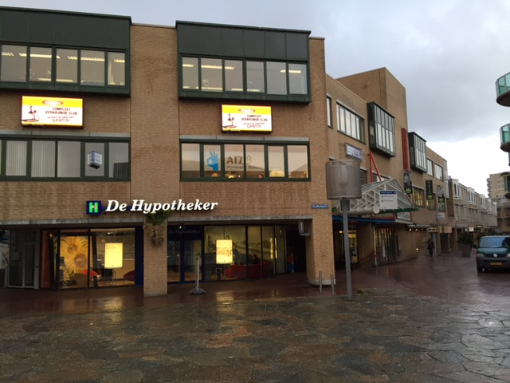
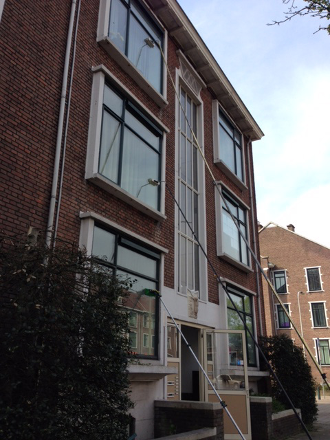
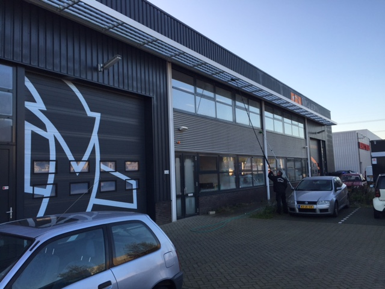
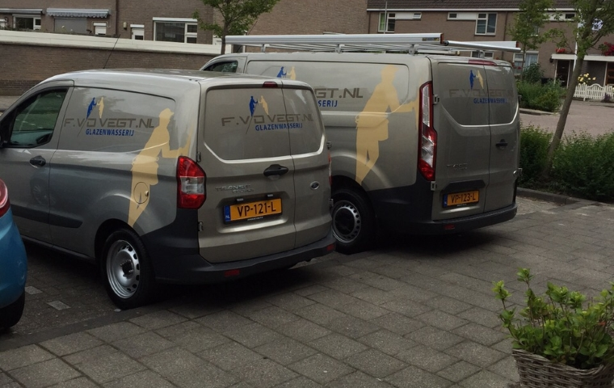
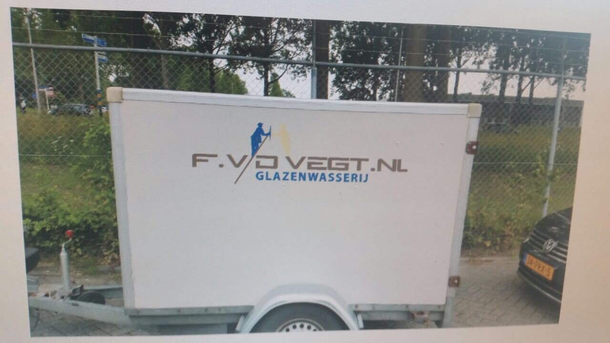

Home › Klanten
Een greep uit de bedrijven waarvoor wij de ramen, gevels en dakgoten verzorgen. Van autobedrijf tot advocatenkantoor.








Wij maken graag een afspraak om langs te komen en uw wensen te bespreken.